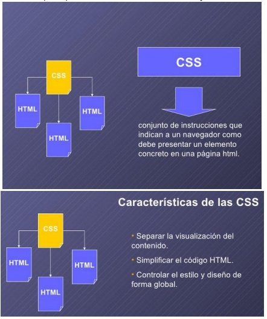
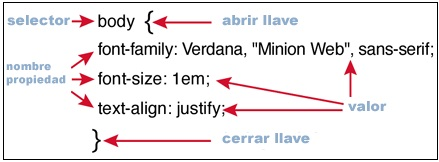

Las hojas de estilo en cascada (Cascading Style Sheets) (el aspecto y formato) de un documento escrito en lenguaje de marcas. Su aplicación más común es dar estilo a páginas webs escritas en lenguaje HTML y XHTML, pero también puede ser aplicado a cualquier tipo de documentos XML, incluyendo SVG y XUL

Vlahusic, M. V.-M. (20 de 05 de 2015).
CSS tiene una sintaxis muy sencilla, ya que usando algunas palabras claves en inglés para definir los nombres de los selectores, propiedades y atributos. Una hoja de estilos CSS estan constituidos por 3 reglas. Cada regla consiste en uno o más selectores y un bloque de estilos con los estilos a aplicar para los elementos de cada documento que cumpla con el selector que los precede. Cada bloque de estilos se define entre llaves, y está formado por una o varias declaraciones de estilo con el formato propiedad: valor;

Vlahusic, M. V.-M. (20 de 05 de 2015).
Para dar formato a los documentos HTML, se puede implementar en tres diferentes formas
- Un estilo en Línea
- Una hoja de estilo interna
- Una hoja de estilo externa